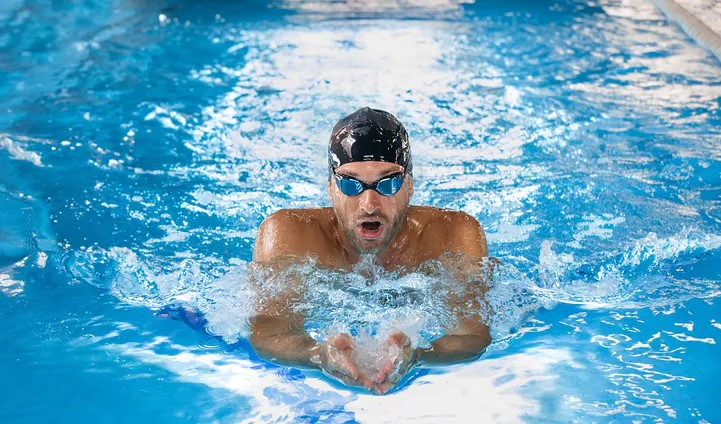

Żabka to najpopularniejszy styl pływacki wśród amatorów. Niestety, sposób pływania najczęściej widywany na basenach nie ma zbyt wiele wspólnego z klasyczną wersją tego stylu.
W pływaniu stylem klasycznym wynurzamy i chowamy głowę pod wodę, a nie trzymamy ją stale zadartą do góry. Ruchy rąk nie są też tak zamaszyste – w momencie wynurzania się zbliżamy łokcie do tułowia, ale tylko do wysokości barków, co pozwala łatwiej wybić się nad powierzchnię wody, by zaczerpnąć powietrza.ca ramion i płaskie ułożenie ciała. Dużą trudność dla początkujących pływaków stanowi zanurzanie rąk w wodzie pod odpowiednim kątem.
Dużą trudność dla początkujących pływaków stanowi zanurzanie rąk w wodzie pod odpowiednim kątem.
